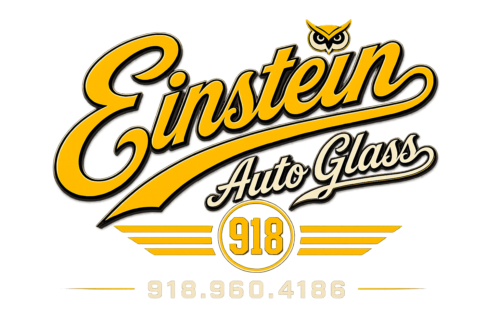

Call 918.960.4186Tulsa Mobile Auto Glass Specialists
Mobile windshield replacement, rock chip repair, and auto glass service across Tulsa, Broken Arrow, Owasso, Bixby, and surrounding Oklahoma areas.
Our Services
Professional mobile windshield replacement throughout Tulsa and nearby cities.
Rock chip repair before Oklahoma heat and rough roads spread the damage.
Support for lane assist cameras and modern vehicle safety systems after windshield replacement.
Replacement for broken side windows, back glass, and quarter glass.
Help with the claim process so customers are not left guessing.
Why Choose Einstein Auto Glass
We come to your home, office, or job site anywhere in the Tulsa metro.
Fast scheduling and quick turnaround for most windshield replacements.
Modern vehicle safety systems recalibrated correctly after replacement.
We help guide customers through the insurance process from start to finish.
Service Areas
FAQ
Yes. Einstein Auto Glass provides mobile auto glass service across Tulsa and nearby communities.
Many vehicles with lane assist, forward collision warning, cameras, or sensors may require calibration after windshield replacement.
Yes. Customers can text vehicle details and photos of the damage to 918.960.4186.
Call or text Einstein Auto Glass with your vehicle year, make, model, and a photo of the damage.
Call 918.960.4186